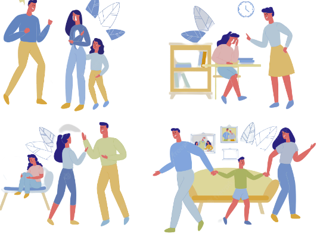
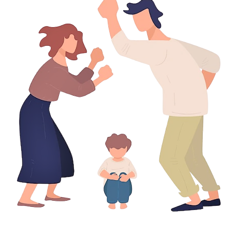

|  |
En las situaciones de violencia familiar existen dos roles,
uno activo, del maltratador, y otro pasivo, de quien sufre el maltrato. El maltratador suele ser una persona que impone su autoridad,
fuerza física o poder para abusar sobre otro miembro de su familia. |
Los abusos, por lo general, están constituidos por agresiones
físicas, imposiciones o malos tratos, y pueden ocasionar daños físicos, como hematomas o fracturas óseas, o psíquicos, como depresión,
ansiedad, baja autoestima o aislamiento social.
Existen varios tipos de violencias, entre ellas estan:
•Violencia Fisica
•Violencia Emocional
•Violencia Sexual
 |
Como tal, está catalogada como un problema de salud pública y, en
consecuencia, requiere políticas, programas y campañas emanadas de los organismos competentes para prevenir y concientizar a la
población sobre las consecuencias de la violencia intrafamiliar y fomentar la denuncia de este tipo de situaciones. |
|